DDT 6
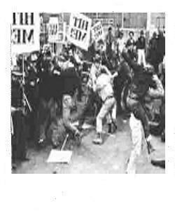
zRebecca
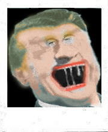
What I see is the seasonal chug at midnight soporific tantrum hazelnut amphetamine sunrise. I know what you mean. The fear thing bleary sports caps in waving flisps of tender acres crossed with Adirondack toothache amphetamine gargoyle raps...lemme just do 49 hours in a chrome canoe with the Hair Girl.
Polished the hubs. The fear bleary waves at itself in a gallery window filled with carved air balls. On The Cross was the weight that ran their clock down the purple pearls of these aluminum hormones. They ran into the pile of empty bottles and began throwing them at the adulteress. Each of them was able to pitch a peanut across the English Channel with the wind against 'em.
Christ was pushed into a wood chipper as his little shreds of meat and the smell of cedar came flying out against the French nuns standing at attention beside their blackboards, each menstruating heavily.
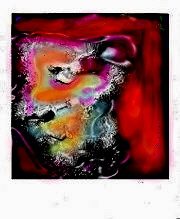
I wanted to compress Picasso, Stravinsky, Elliot, Moore and Maughm, but all I could do was force Arthur Godfrey to pee on a picture of himself. It would have to do...the cars were already beginning to strain at the corpse of Frank Lloyd Wright.
Angelica Houston tried to deep-throat an axe handle but all she got was Orson Welles' two hands to smack together until the rings fell of with the fingers. Her father was no longer at her side. He bobbed for fish with Fellinni, attempting to do "bubble talk" about just-what-letter-boxing "means". Fred tried to say "Directors Cut", but it came out "Didactic Cunt" and Houston gestured toward a school of minnow attempting to stoop like Monty Cliff eyeing Clark Gable's heart through the LL Bean chamois Mans Shirt.
Freddy shrugged and tried to smoke, but the cigarettes dissolved and the match heads turned to white mush. He shrugged and bit off his lower lip.
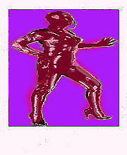
All the Roman Cossacks hear confessions in the midst of the pogrom. All are named Chenko and pull at their nipples with a grace born of white suspenders and cleansed palms caressing the turnips of open-desire.
In a barn a woman pulls yards of blue satin from her pudenda, pausing to drink from a black ceramic cock hanging by a thread of golden chains behind her head. Her laughter is followed by a series of sharp pistol shots as she reaches orgasm and the cossacks mount their mopeds and strap pink opalescent peeped-beads to their topknots. All have neck cancer.
It's raining in the north again. Three women on a glass raft burn their hair for a signal fire and drown in the crusted foam of ice water. This is on every radio in the metropolitan region but the tri-state area is buzzing with the news about an old man who died in an apartment and was found completely eaten by his starving canary, which managed to struggle through the bars of its cage after a few days off its feed and then consumed the gent over the course of a Summer, growing moody and compulsive and angry with each approaching dawn. It was found in the bathroom, looking into the still water of the toilet, weeping.
The Khmer Rouge tied everyones' hands behind their backs with telephone wire and marched them into the jungle and started shooting immediately. Those in front tried to run but there was a kid with a bag of hand grenades and an M60 and he sprayed them so they'd lay down and he lobbed a couple of grenades into the bleeding bunched up fucks they died there screaming for their glasses and dictionaries. The kid sprayed an old mans' head until it was a pulpy blot and then crisscrossed the dying like it was a fucking arcade and he heard each shell casing ping as the numbers went into the hundred thousand and they had to shoot him to get him to stop. He died happy little fuck with a half eaten centibar in his shirt pocket.
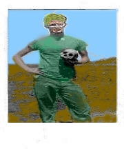
I shot Van Gogh and made him smoke his pipe while I smeared his paintings with a whore's dentures. This made him laugh: the small cheap bullet lodging deeper into his pancreas, already sporting a top hat and spats. I spat on them and demanded a recall. I had lost by only one vote! I tried to fire again but all I got was a check for 40 million dollars from a Japanese Corporation with 24k front teeth and a satellite lock on my imagination.
The spooky nylon phantasy: long legs. Fresh pasta draped over a suntanned ass swelling out from a small silky back. She farts a squeak and adjusts her sunglasses, attention is everything to detail. I eat the pasta with a lobster fork made from sized polyester. The flights of terns amuse us. We laugh and roll off the deck into a cedar-lined pit of iced espresso. I want to cry out the titles of Antonioni films, but only manage to whistle the themes and she is amused and fondles my soon to be circumcised cock in the deep mocha that holds us together like a metaphor.
The darkness of sewer plated patios, piled high into the flight paths of 747's bringing kraut tourists to get shot in the throttle...everywhere. The twitching bodies of repeatedly run over by Chimps dressed like Baltimore Shriners, their little red felt fezes emblazoned with the sequined mock Arabic...the screams of library-science virgins strapped to miracles in green glass and steel girders, as boar-shit is stuffed into their colons by crack-babies high on chewing gum and nitrous oxide...the giggles of the middleweight tourist. She dipped her fingers into the pool of scented black oil gathering under her boots and traced out the letters on each breast:
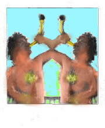
Orson continued to crawl around the bed, looking for his water pic or a sandwich....The shells open, slinting glints wet & Mary posed for Mailer at the Doodle Bar & Grill on the corner of 43rd and 8th while Gore kept pushing nickels into the bubble juke, pushing buttons at random, peeking over his shoulder at the bartender who would take down the 1943 Thompson from it's cradle over the bottles behind the bar, and oil it with a rag he kept in a green glass. Takes all kinds..." Mailer said to his entourage, holding up the doodle he pretended was his date riding a large Japanese helmet perched on a chalky bleached skull-bone. "I was in FUCKING WORLD WAR DEUCE!!!", he screamed.
Gore slipped on a pile of wet Greek fisherman's caps and went down in a bundle of limbs, hitting his head on the edge of a fire extinguisher. "Not again...", he moaned with the dignified irony in his voice that had made him famous in large whitewashed lofts from Dallas to Calgary...pattern whiffle-walk slow-mo Mongolian Pattern Dance.
A vacation takes place in a tin chalet held in place under a cliff with blue wax. Real eggs are forsaken for Faberge gold/bisque obules, taken from the dead fingers of little Anaesthesia as she looked without seeing as they tore open her delicate chemise to remember how the bullet holes looked beside the pale grey nipples, the pistols having smashed through her small, regal back: blood pouched in her downy ass, but no man looked because all they wanted was her death and the egg and a look at the bloody holes and nipples long enough to feel their cocks moving.
This is a vacation at the Inner Circle. This is a glazed tattoo over the retina as one sips prehistoric ice water from a female boot with twelve inch stainless steel heels etched with your name in runes. The pistol shots in the lowlands reach up through the wind. What a bore. Amazing grace follows you like a Hells Angel's babe high on math trying to get you to fuck her in the ass while her old man is slowly loading a rusted broomhandle with dum-dums. They you find out he's only passing through, she's really the grand daughter of Picasso , it's all being filmed by D L and there's a check waiting for you at your new suite at the Plaza. Someone is following you...
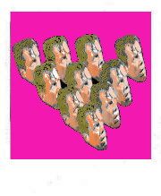
The troll stole along the camphor bowl implements: That crow, a slow implement-taster: made a spiny devil befriend the cactus borer's cousin. The reliable sun, waiting to explode, grew dense and angry...shooting lewd plumes of fire at the curving time-gaps. Traditional orbits aped the funnel.
Debris fell into oceans. The foal, finally wrapped in the tense light, leapt higher, catching the leaves of the small scrub brush tree which was jerked tighter...lighter...in flat ovals of bright yellow light. And yet that Ape, all hair and arms in obscene panoply, alights the dreary casements draped in glistening Paradise. The silent lights make orange ardent glint, and light the leafy keeps of...everything. But the rifle of my loins kept time with heartbeats, waiting for her soft target to sail back along its wire :
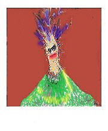
1. If I could die in my own arms, as sweet as a Bundle of pig's faces tied with the ropes of imagined desolation! How sweet the final moment! To feel the strangling womb enclose all fear in the stinking bouquet of its pathetic DREAM!
2. I can't UNDERSTAND you. You're speaking too loud. My heart aches for one peaceful moment under a subway train's wheels. My bowels just want to stretch out their Blue arms along a slippery track and rise up in the dreary hands of vomiting policemen.
1. I think it may rain sometime in the distant past. Do you? I mean, can you consider it? You mustn't answer too quickly, or I'll have to dismiss you as an asshole.
2. Imagine my intestines! The tracks wet with my blood mixed with half digested hamburgers! The pure luxury of dying in the arms of a dark train with Large Bold Numbers for a name. Delightful?
1. This is getting us nowhere.
2. Where would you suggest we go? The museum of IDEAS? Dada wants you to worship at the feet of an Oyster filled with dynamite. I don't feel your sincerity. You're Lost in Wallpaper again, waiting for white plaster tombstones to drop out of the sky to give you absolution for wearing sudden underwear.
1. Haven't you ever look into the dead eye of a slaughtered billionaire? The way it smells like a painting of derbies fucking on a pool table, on a wax ball covered with thousand dollar bills? I've walked the hills of desire with a carbuncle on my heart, weeping for the lost....
2. That horrible appreciation for the finer things in life.
1. ....weeping for the lost tongues of fried bishops. Besides, "performance art", like cubism, is a CATHEDRAL OF SHIT.
2. A cheap trick. Besides, I saw it done yesterday, and better. I had just left the dreary burning wall of gasoline by the butter factory. I saw a small package and when I opened it, there "it" was. I felt afraid at first...then I wore it like a hat until it began to scream and stink. Then I ate it with mustard and wires. It wept inside of my mouth and made me sad...but the flavor was unusually delicious.
1. I really don't want to hear about it. These aren't pencils. They're letters from God to his favorite cunt. He loves them. Made a fortune tuning them against the sound of sucking tornados in movie houses. Are you ready to sing?
2. Not really.
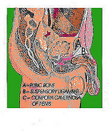
We will do this together now To make us lazy and unwary These are after all, just words strung On their hams. Throw dictionaries into the public's thought I was having a better time We can make magic, and blow on the embers Of Imagination...set trembling After events is running now,passing the lie, Not waiting for approval or drunken comfort Together at the edge of the volcano: Gritty pearls to set before the diners What can we do? The eyes, the mouth, the language trailing Gaining on out pure immortal selves. Weevils dues to gather new Tomatoes lay sea sand one weary Tree's a rafter calls mustwards hung spike Under rams. Throat itch on every skin today, pubic Eye,throat, Eyewash heaven: Abe's turpentine Match stick, hands glow under amber Offs his pagination...sat rumbling Aft, her Eve vents ice, ruining no Piercing July, Knots waving forks, apes grove all order, can fork The graver hat: sea sledge Kafka Moreno:
Grip the pears, two seats bead four thread miners Hot clammy dew? Flays? Canned hats. Alf's hat-swede lament houses Tie dyes Plymouth, veiled languid trails sing Gleaming odor: Pork in a tall cell.
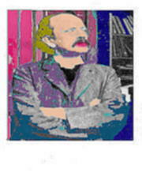
The rope of mocked blood cocked at the artifice of Lord Cardigans miserable pallid banshee-fraught pram-jam organ GRINDER? Where does it say BABOON? or again...the operatic pancake smeared along A wiggling' piglet's cock Charging the Guns THERE ARE THE GUNS SIR!
THERE ARE THE GUNS SIR!
Cardigan drew his smarty bloke-sword and waved it in a zig, dragging along The buoyant boys of the Light Brigade, sweeping weeping swept like Killed-Boys in the ballock's lather. Rode the sick hungry never to return or outrun those CANNONBALLS Flying like BIG THINGS HOT FROM GUNS at The horse-shaped targets swarming at the apex of Eternity, Sir.
THERE ARE THE GUNS SIR!
"bazloon" were his last words, or "Kiss me on the Laurel, Hardy!"Thus ends the True Mechanics Tale of adventure upon a Plugged chest full of jute cannonballs and decorum falling falling falling into the dull gloss!
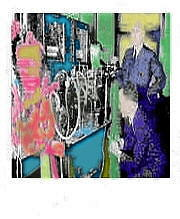
She wept a tide and slid: the body was And electric eklektic ecco Mumbling at the black common Void in nibbles Plotted in gritty glints Blown out the hole of
We waited at Hell's SUICIDE GATE, watching the Desolate trickle of anxious Wisps Suck at the black marble bust of The Evil Departure.
Hung on a chance: skin for pants and an ace of hemp for the ace hemp dance. The dead man's jokes lay in the buried box where he sleeps embalmed terrors Poor organ orifice, so much maligned, By Nature tucked away and left behind, Whose rankest bounty is but legacy To that which mouths consume in ecstacy To send the finest veal, the berry tart, To turds transformed, and dusted by a fart. Chew the puck HOWDAH!
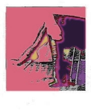
Isbit the lesbian wrestler said "Kronkheidt!" The alps The alps Plinker and stinker Heft and weft leaver Arm-wrestler and turban licker SUPREME dream on demon Lion Elephant Lepanto JELL-O (for a Turk) This is how the world bends This is how the world bends This is how the world bends: CURLED dawn rushing aroound the glooobe
Evening at the other side PIF! (a goober)
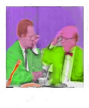
The pirate dust, and meteorite Hand-Print: I ache in aces high On hidden channels Where the thick leaves plunge Dripping with scented noise. Roaring oak planks flung into the fireplace by sweating Negroes It was a forest of shouldering florists (pencils stuck behind ears, into asses) and from a beard in Michigan I heard the glassy twat of SPRING plunge hot riots of sludge across the corn belt Vote for the exploding telephone Hoarding butter in a basement Piled with fan dust Plummet like the plumber falling through an ape's apppppeal Sower dew WANG tis a Gain Where athwart the molted Malice Plain Affixes twixt itself the Meatless Calliope Like a patient etherized upon a table...move, in the moist mosques, where gurgling minarets move rooftops, whole hoops, mops, ropes, all the blue plums of Korsakow and the smooth silent snakes of Detroit Caught, my chin runneth over in bright white/yeller splotched ivory domed and smooched with purple verses there!
California! like a plucked duck Frowning o'er the hockey spade! Myomalacia! Reclined, stripped naked by the bachelors: descending the staircase in Arles. Buried with honors by midget Zouaves high on laughing gas. Gauguin waited at the train depot wearing a sky-blue smoking jacket and a crown of thumbs. Motrin Motown Mobile Caulder moves me Barking to the expanded Drummer Pork
Ambient Machines: poultice polish panderer!---na---na---na---!
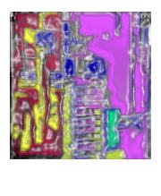
Who cares? the sadu waits inside the ELEPHANT, longing for RELEASE and the Shaduf! Blame the Drum Slowly, in boiling yams Where belly-dancer's cut the cards for Your LIPS. Gary Moor is a black dab of natron & tar Playing the MEAT BANJO for yer Appetite. The bearded LADY Slips her little wine And burns MUSK In the ambient Ambrosial PINDAR'S Pumpkin eyesore AFRO-diet PTOLEMAIC polemic. Anyway. Profound LIP-MUSIC on tip ends Where Blue Lascars flip cartwheels Into THE OPALESCENT MUCOID CRYSTALS! The magic is RIPE, baby: time to make the Dwip Tarpl Hommp Splew-T! This town is an old man Chewing on pantyhose Waiting for the Cabs of Time To collide in the rubberoid Closet of sweet colostomy.
Angled moths in dunce jackets, like Mayans Knife arbors: Drake's nose is a royal toy We preen on cheese-pads...sink limp tinsel hair What matters to the bishop are his skittering flock. Ski on illusion, on rats with boiled leather gloves and backs hunched over the piles of pocketbooks that are the chess-pieces-of-amour, fried ducks on a carpet of red fish skin where the pandas duel with straight razors and rare ice...the variable earth wobbles and waits, wobbles and waits:
I think that I shall never see, A president as powerful as Dwight D. Eisenhower as he chewed down a tree. El Greco's light, clanging in clouds above The lace trapped shadows round the bishop's neck.
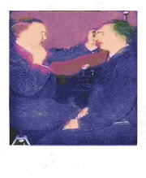
white carriages pulled by transparent horses across rocks pit winding down hollow fist lit by a heart waiting for that which will come to pounding light without remorse they wait in the edge's scent of rock and earth peering over battered rim sweet desolate palms shattering silence what gazes back an echo of wailing planets trapped to carve eternity morning falls -- night arises swollen artifacts reaching through and lost in transits to relive the silence the white zone right darkness folding dreams dust and teeth dizzying rush of spaces toward every moment
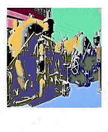
The greased blue dwarfs in tin uniforms rolled out the silver busts.Twenty ebony cattle, set with tiny lines of lapis and gold...wires poking out of glowing eyes. The black sky. Sound of tiny grunts and the sound of grinding. "Franz!", screamed a small wicker figurine set along the cliff. They all looked up and ran for the cave entrance. BN poked at the dead gorilla's shaved back with the tip of his shoe. The ape rolled over the edge and splashed onto a black rock set with bottles of cheap wine.
The sound woke a sleeping Dwarf-Trooper who ran for cover beneath the rain soaked logs that edged the spill-off. He checked his haversack: one Latin grammar, two packets of gum, a long rubber knife and twenty photographs of a Japanese woman bound with strips of licorice. His little heart stopped beating on schedule and a filmy web began to emerge from his light blue ears until he was encased in a tiny cocoon that hardened and cracked. There was nothing inside but a small bust of Constantine The Great and a handful of after-dinner mints.
You miss the point. Imagine Tinkerbell as a morph of Bamboos alterego, running cute-riot over the diamond landscape that sucks at a sea of lemon-scented teardrops. Imagine the Carpathian Mountains. Low elves, steamed Hallmark Cards are sexually disinfected. An infected Sachet in hurting herself, taunts a beret's brother, when simulcasting Exhibits of small clothing & carrot sticks. Wakens fathers, inquire peacefully, after hikes. I remember...! I REMEMBER NOW!
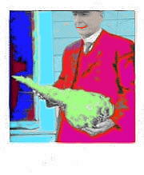
Sapphires? A pile of pale violet doorknobs upon which sat the stuffed Mole. The taxidermist had used cue balls for the eyes, painting them in with a swab. He daubed at his paint stained hands with a wad of handy-wipes and stepped back to admire his work, falling backwards out of the open window. He knew this was the end and scrubbed at the stubborn flakes of red paint on his palms.
He crashed onto a pair of delicate men about to embrace. When the coroner left, and the bodies had been collected, all that remained was a clump of pink Hindi-wipes in a varicolored stain surrounded by a chalk outline vaguely resembling a crawling baby.
Suddenly, nothing happened. It burned unattended for a day and two nights. Then it started again and reached for the stalled supermarket delivery van. The people eating at the Fish Restaurant noticed and all coughed. I was just about to smash another oyster against my knee when it began to rain Big Hats. The monkey, shaved and dressed in a suit of lights, wept and staggered...staggered weeping like a broken guitar.
The busses passed. The blue haze of dawn held him in its misty fist. Polka players bet their accordion pearl on how much he wanted to be smothered in CD's of CLOWNS ON VELVET. This he didn't know.
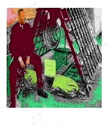
The motorcycle people, predictable oriental lutes played in a naked Egyptian whistle. Hell brought back on a shrimp fork from Sears & Roebuck. Fourteen fingers in her box and her face never changes but the quill shudders and Lomax eats a jack-off peach until he disappears into his faggot-cigar.
Under the cannons smoke. Pencil salesmen slitting their wrists with printouts. A Mexican wanders into the sunset, his balls trailing in the piles of toupees that fell from the Virgin of Guadalupe's bandanna.
In the near distance: a screamer on a roll. In the middle distance: silence. In the far distance: Chuck Yeager cements himself to Napoleon's catafalque.
butter is a flowing African pages torn into post coming in rain pale whales incense width copy ohms psalter Afghan hound poultice pichi ion malo carton simian doughnut marmalade tart table, table chaste ghosts killer middle pan cambia akimbo oak tip toe tile prints yin yin taste pumice balloon tattoo motor oil peyote oaks
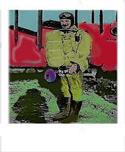
President Roosevelt, adjusting his gutta percha colostomy bag, spat bronze wads into his bully palms and wrestled the herd of bison to the ground with a laugh half roar -- half yap. After a lunch consisting of two dozen Dodo eggs fried in hog lard, he gouged out one of Mahler's eyes and kicked Wagner in the hump. The rest is history. Swaggering sanit-men ignite the blooms. Clones fight over heaps of bagpipes.
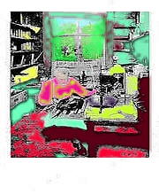
The groaning wind, the rumbling sheets, a bargain with the wind: We'll do it in the streets again, why closet what we've sinned? My cloven ruby dirk in murk surrounded swells to size, It thrills to spill its opals there like gleaming simonize. But oh that sun that scales the scene in gilt O'er spilt the wormy woods with warmest fire Finds love to bind its kind in rudest tilt Twixt tiny bones assailing through desire. Yet rocks are chains that bind the sea to turf, Here pounds the melancholy range of captured surf To toss the timid sand in gritty heaps, And pile the pall of seaweed's bubbled keeps Against the sweeter strains of Xerxes' lube Which rises in a spout more tail than tube, The ox is slain and blood spills hot on sand, Which lies against the rocky arch-ed strand, Here treachery begs lust and leaves the game, Deflated, flat, to flap upon the main, And chains are rocks that bind the meat to surf, In gritty heaps that sprout along the turf, A bladder floats in softly on that tide, A melancholy bubble hid inside.
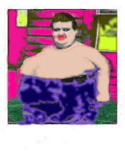
A brilliant tin bubble of pure light, traveling at top speed since the dawn of time struck him full on the forehead and that-was-that. He didn't feel the change, although at the time he suddenly wanted to get up and walk about in the room. And he did so, carrying his large red cup of coffee to the doorway and he promptly laid back in the full, robust air behind him and floated to the ceiling. "This will not do..", his friend Bud said in a nearly offensive tone that echoed in Wally's brain and sped along the chapters of his imagination, settling, finally, in a slightly cool section of his mind reserved for apricot recipes and the distances between ancient capitol cities. In effect, it was instantly forgotten, half- registered as he floated against the ceiling and could smell the dust and soft cigarette smoke. He wanted to remove his clothing and pulled off his sweater and shoes, and in the manner of a scuba diver feeling his way along the underside of submerged object, softly pawed his way toward the open window. What would happen - he thought- when I reach the open air? He imagined a flavor. It seemed perfectly natural to him.
It was the tin bubble. It had filled him with an easy awe as it turned off the dulling memories that make up reverie. Usual reverie, that is. He reached the window and pushed softly off the ceiling and thought himself out into the lighted air, carrying himself slowly upward, upright. It was then that he realized he was, indeed, not alone. For beside him "stood" a small lucent figure, himself at four or five. "I'm you at four or five.", said the figure, nodding and smiling. Wally took the boy in his arms and they descended to within an few inches of the small patch of grassy yard planted with wax begonias and sweet Williams. The light in his brain had made him hungry and he inhaled all the flavors he could think of and began to feel warm. Light had begun to spin out the breath of his hair.
Bud was leaning out the window. "Who's that?" said Bud and the boy. At that moment they canceled each other out, virtual question-particles at the event horizon Wally thought like a bird singing and made a sound like snow slipping from an infinitely polished copper roof into a delicately spun fan of soft, dark green pine needles. It was beautiful - he thought and now it flowed from his face as a sheet of blue and orange flame, smelling like a bell shimmering at midnight.